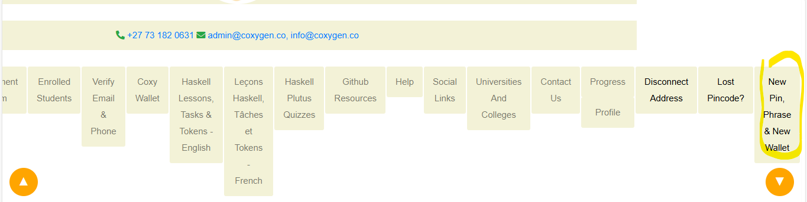

🔠Lost PIN Recovery
If you’ve forgotten your wallet PIN, don’t worry — you can reset it securely through the Lost PIN feature.
🧠Step 1: Navigate to Lost PIN
- Go to the Coxygen platform.
- Click on "Lost PIN" from the navigation bar.
📠Step 2: Fill In the Recovery Form
To reset your PIN, provide the following details accurately:
- Email Address – must match the one you registered with
- Phone Number – enter in international format, e.g.,
+27XXXXXXXXX - Passphrase – your strong password used for transaction signing
- New PIN Code – your new 7+ digit PIN
🔠Step 3: Update Your PIN
After filling in all fields:
- Double-check that your information is correct.
- Click the "Update PIN Code" button.
✅ If all details are valid, your new PIN will be saved and ready to use immediately.
🆕 Need to Create a New PIN, Passphrase, and Wallet?

If you don’t remember your old passphrase or want to start fresh:
- Click on "New PIN, Passphrase, and Wallet" in the navigation bar.
- You will be redirected to the wallet creation page.
- Enter your primary email address.
- The system will send you verification codes to your email and phone.
- Click "Verify Email and Phone Code".
- Once verified, click on "Create Wallet".
- You will then be asked to:
- Enter your primary email
- Set a new PIN Code
- Set a new Passphrase
🔠This creates a brand-new wallet instance linked to your verified account.
âš ï¸ Important Security Tips
- Keep your passphrase and PIN code separate.
- Never share your passphrase or PIN with anyone.
- Make sure your new PIN is different from your previous one and easy to remember (but hard to guess).
- Always back up your new 24-word mnemonic after creating a new wallet.
🆘 Need Help?
If you encounter any issues:
- 📧 Email: admin@coxygen.co
- 📧 Email: info@coxygen.co
- 📱 WhatsApp Support: +27 73 182 0631